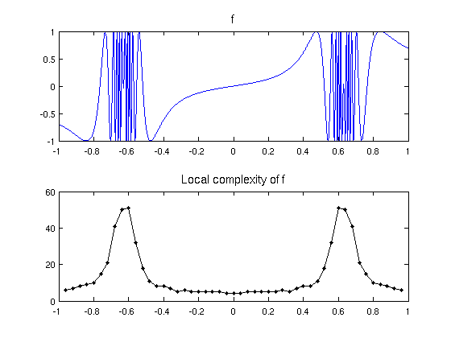
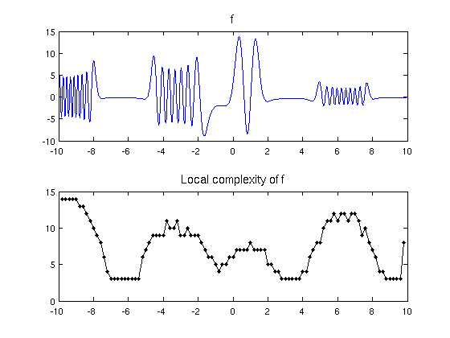

Local complexity of a function
Nick Trefethen, June 2011
function Local()
(Chebfun example approx/Local.m)
Sometimes a function f is more complex in some regions than others. Maryna Kachanovska of the Max Planck Institute in Leipzig suggests the following question about a function f defined on an interval: at each point x, how high a degree polynomial do you need to approximate f to a specified accuracy ep in [x-d,x+d], where d is a small number?
It is easy to compute an answer to such a question with Chebfun, using the syntax f{x-d,x+d} to focus on subintervals. For example, here's a function that's quite wiggly in two regions:
x = chebfun('x');
f = sin(x./(1.02+cos(5*x)));
Let's scan it from left to right, measuring what length of chebfun is needed for a representation to accuracy 1e-6 on intervals of length 0.2:
function Scan(f,ep,d) % First, plot the function f: FS = 'fontsize'; LW = 'linewidth'; subplot(2,1,1), plot(f,LW,1.4) title('f',FS,14) % Next, scan its complexity and make a plot: [a,b] = domain(f); np = round((b-a)/d); xx = linspace(a+d,b-d,np-1); chebfunpref('eps',ep); ll = 0*xx; for j = 1:length(xx) ll(j) = length(f{xx(j)-.999999*d,xx(j)+.999999*d}); end subplot(2,1,2), plot(xx,ll,'.-k',LW,1.2) xlim([a b]) title('Local complexity of f',FS,14) chebfunpref('factory'); end Scan(f,1e-6,.04)
Here is another complicated function and its scan:
u = @(ep) chebop(@(x,u) ep*diff(u,2)+x.*cos(x).*u,[-10,10],0)\1; f = u(.01); Scan(f,1e-6,.2)
This last plot seems surprising -- why does the complexity go up at the right endpoint? On closer examination we find that the boundary condition has introduced a blip there:
Scan(f{8,10},1e-6,.2)

end